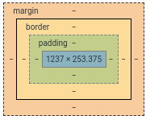
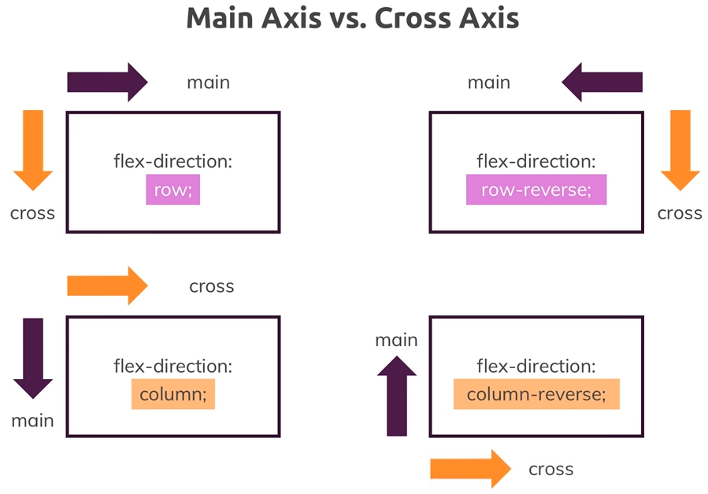

HTML: Elemente
CSS: The Box Model
- content -> padding -> border -> margin
- Rahmen:
border: <Breite> <Typ> <Farbe>(Beispielborder: 5px solid red;) - Gleichmäiger Abstand: ein Wert (Beispiel
padding: 10px;). - Gleichmäiger Abstand oben/unten und rechts/links: zwei Werte (Beispiel
padding: 10px 5px;). - Individuelle Abstände oben/rechts/unten/links: vier Werte (Beispiel
padding: 30px 20px 10px 5px;). - 
CSS: Position
- Document Flow: Position ist
static,absolute,relativeoderfixed(zum Beispielposition: relative) - Position (
top,right,bottomoderleft) und Positioning Context (viewport oder html-Element) - Position Context immer zum Containing Element mit einem definierten Position-Prperty (-Context)
- Position Absolute und Fixed: nicht mehr im normalen Document-Flow bedeutet, dass Block-Level-Element inline sind!
- Position Fixed bezieht sich immer auf den Viewport!
- z-index für überlappende Elemente
CSS: Display
MDN web docs - display
- Display Options:
block,inline,inline-block,noneusw. (zum Beispieldisplay: none) inline: Ausrichtung der Elemente möglich (Beispielvertical-align: middle)block,inline-block: Properties wiewidthundheigthkönnen verwendet werdennone: Elemente verstecken (für JavaScript)
MDN web docs - display flexbox:
- Parent- oder Wrapping-Element wird Flex Container durch
display: flex, weitere Properties sindflex-flow,justify-content,align-contentoderalign-items flex-flowbenötigt<flex-direction>und<flex-wrap>(Besispielflex-flow: row nowrap)

align-itemspasst die Items an die Cross Axis an:stretch,center,flex-startusw.justify-contentpasst die Items an die Main Axis an:stretch,center,flex-startusw.align-contentpasst Platz entlang der Cross Axis (nur bei mehreren Zeilen/Reihen) an- Enthaltene Elemente werden Flex Items, weitere Properties sind
order,flexoderalign-self